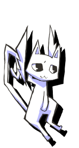

| TOP GAME SYSTEM CHARACTER MOVIE SPECIAL ENGLISH | |
☆ ストーリー紹介 ここは、日本のようでそうでもない世界。
くいしんぼうの少女デリカがいつものように食べ物をあさっていると… 「やぁ、ボクはサテン。君の探しものなら、 さっき白いカバみたいなのが食べちゃったよ。」 どうやら、外にウジャウジャいるあいつらの仕業の様子。 つづけて、このネコはいいます。 「ボクと契約して、魔法少女になってよ！」 …というのは、ウソなんですけどね。 ともかく、デリカは魔法少女になって、あいつらにおしおきをしようという物語。 ハラハラドキドキ、どんな展開が待っているかな？ …ええ、またウソを付きました。 中身があるような無いような、そんなお話がみんなを待っているよ！ まぁた、いいかげんなこと言って…。 やっぱり、集客効果がある言い方があるとおもうんだ。
もしかして、裏でお酒飲んできてるんじゃないでしょうねー。
そ、そんなことは無いよ。酔っていい加減なことを言ってるなんてことは、ないよ。

ま、いいわ。
晴れの舞台だし許してあげよう。 わーい。
じゃあ、そういうわけで、買ってね〜。 | |
| © 2011 xionchannel software | |
|
| |